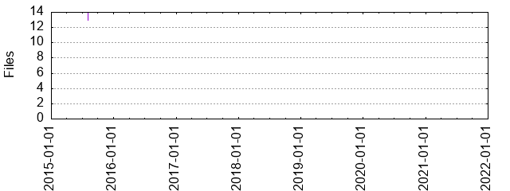

Files
General
Activity
Authors
Files
Lines
Tags
Total files
14
Total lines
721
Average file size
2092.29 bytes
File count by date

Extensions
Extension
Files (%)
Lines (%)
Lines/file
2 (14.29%)
202 (28.02%)
101
json
1 (7.14%)
5 (0.69%)
5
md
2 (14.29%)
60 (8.32%)
30
txt
1 (7.14%)
15 (2.08%)
15
vim
5 (35.71%)
315 (43.69%)
63
vroom
2 (14.29%)
95 (13.18%)
47
yml
1 (7.14%)
29 (4.02%)
29